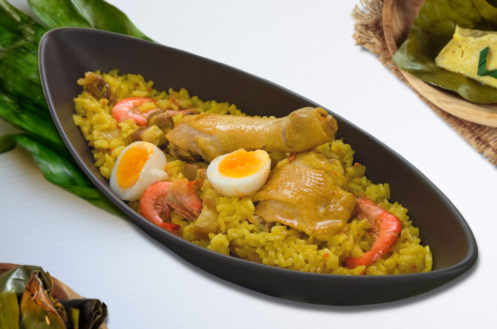
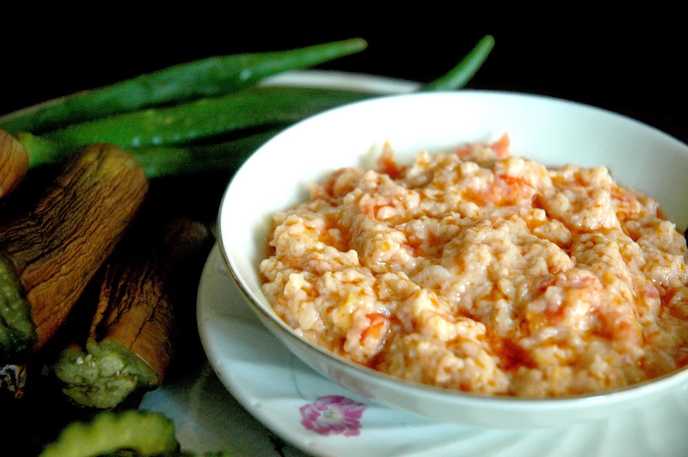
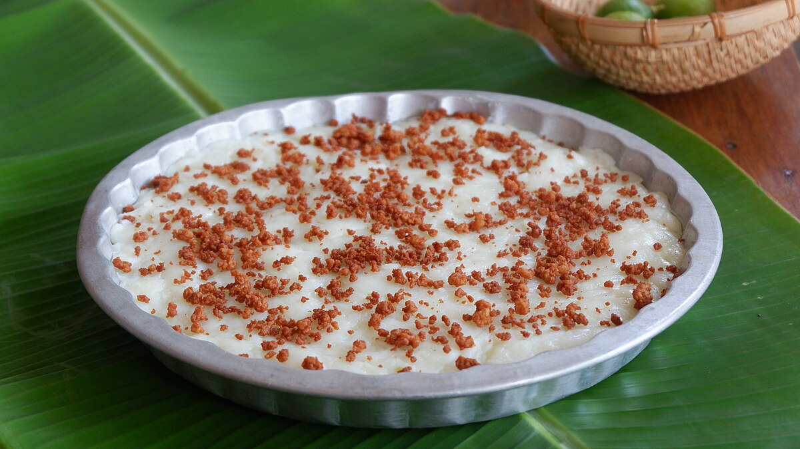

A Photo Tour of
PAMPANGA
Pampanga, often hailed as the "Culinary Capital of the Philippines," boasts a rich and storied
food heritage that has shaped Filipino gastronomy for centuries. Its reputation as a food haven
dates back to the Spanish colonial era, when Spanish friars and officials preferred Kapampangan
cooks for their skill and creativity, even entrusting them with preparing feasts for important
events like the proclamation of the First Philippine Republic. This long history of culinary
excellence, combined with influences from Spanish, Chinese, Malay, and indigenous traditions,
has resulted in a vibrant and diverse cuisine that is uniquely Kapampangan.
The province’s culinary artistry is celebrated not only for its bold flavors and innovative
dishes but also for the way recipes and techniques have been passed down through generations,
making Pampanga a must-visit destination for food lovers. This legacy was recently formalized
when Pampanga was officially declared the Philippines’ Culinary Capital, cementing its role as a
gateway to exploring the nation's rich food culture.
Some of the most famous foods from Pampanga include:
1. Sisig
_2018_04_30_10_19_43.jpg)
A sizzling pork dish made from chopped pig’s head and liver, seasoned with calamansi and chili—an iconic Kapampangan creation.
2. Bringhe
Pampanga’s version of paella, featuring glutinous rice cooked with coconut milk, turmeric, and assorted meats.
3. Betute

Deep-fried stuffed frogs, a unique and adventurous local delicacy.
4. Buro
Fermented rice with fish or shrimp, often paired with vegetables and fried fish.
5. Morcon

A festive beef roulade filled with sausage and eggs.
6. Tibok-tibok
A creamy coconut pudding dessert.